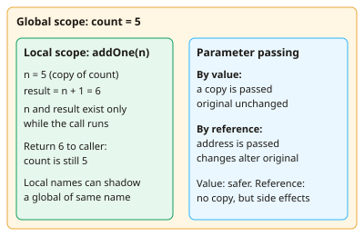

A-level Computer Science Year 13 · Topic 9
Programming techniques and paradigms
Programming techniques and paradigms covers the different ways to structure and write programs.
We will use programming constructs, scope and parameter passing, modularity and I D E tools.
Then we design object oriented programs with U M L, compare paradigms, write assembly language, and plan thorough testing.
- 7 subtopics
- 225 questions
- Free: 9.1 notes and 10 questions
In this topic
- 9.1Programming constructs, variable scope and parameter passingFree below · 36 questions
- 9.2Modularity, functions and procedures, and use of IDE toolsOpen in Full Marks · 31 questions
- 9.3Object-oriented programming: classes, objects, inheritance, encapsulation and polymorphismOpen in Full Marks · 32 questions
- 9.4Object-oriented design and UML class diagramsOpen in Full Marks · 41 questions
- 9.5Programming paradigms: procedural, declarative and object-orientedOpen in Full Marks · 30 questions
- 9.6Assembly language, Little Man Computer and addressing modesOpen in Full Marks · 22 questions
- 9.7Testing and debugging strategies: test data, test plans, white-box and black-box testingOpen in Full Marks · 33 questions
9.1 · Free notes
Programming constructs, variable scope and parameter passing

Key points
- All programs are built from three constructs: sequence (statements in order), selection (IF/ELSE, CASE/switch) and iteration (loops). Examiners expect you to trace these accurately.
- Selection can be nested, and a CASE/switch statement is a tidier alternative to a long chain of IF/ELSE IF when comparing one variable with many values.
- Count-controlled iteration (FOR) runs a known number of times. Condition-controlled iteration has a pre-condition test (WHILE, may run zero times) or a post-condition test (REPEAT...UNTIL / DO...WHILE, always runs at least once).
- A variable can change during execution, while a named constant is assigned once and cannot change. Constants improve readability and maintainability because a value such as VAT_RATE is changed in one place only.
- Scope is the part of a program where an identifier can be accessed. A local variable is declared inside a subroutine and exists only while it runs. A global variable is accessible throughout the program.
- Prefer local variables: they stop accidental changes from elsewhere (side effects), allow the same name to be reused safely, save memory because they are destroyed on return, and make subroutines easier to test and reuse.
- Global variables make code harder to debug and maintain because any subroutine can change them. They create hidden dependencies between modules and reduce reusability.
- If a local variable has the same name as a global one, the local shadows the global inside the subroutine. The global's value is unchanged outside.
- A parameter is the name in the subroutine definition (formal parameter). An argument is the actual value passed in the call (actual parameter).
- Pass by value passes a copy of the argument, so changes inside the subroutine do not affect the caller's variable. Pass by reference passes the address, so the subroutine works on the original and changes persist.
- Each call creates a stack frame on the call stack. It holds the parameters, local variables and return address, and is removed when the subroutine returns.
- Exam technique: when tracing, use a trace table with one column per variable and update it on every iteration. Check loop boundaries (off-by-one errors) and whether the loop test is before or after the body.
In more detail
- Worked nested loops: printing a 3 × 3 multiplication grid uses a loop for rows inside a loop for columns.
- Worked global variables: changing a global counter inside a Python function needs a global declaration; passing it in and returning it is cleaner.
- Worked mutable arguments: passing a list to a function that appends to it changes the original list, because lists are mutable.
- Worked CASE: CASE day OF 1: "Mon", 2: "Tue", … is clearer than a long chain of IF statements.
- Worked loop types: FOR is count-controlled; WHILE tests before each pass; REPEAT … UNTIL tests after, so it always runs at least once.
Practice
Programming constructs, variable scope and parameter passing: 10 questions
Pick an answer to check it, or open the answer for the explanation.
1. A variable total is declared inside procedure calc(). A statement in the main program then tries to print total. What is the most likely outcome?
- It prints the value of any global variable called total, with no error
- It prints the last value assigned in calc()
- It prints 0 because it is initialised by default
- An error, as total is out of scope in the main program
Show answer
D: An error, as total is out of scope in the main program. total is a local variable, so it exists only while calc() runs. Outside the procedure the identifier is out of scope, giving a runtime or compile error.
2. Procedure double(n) sets n = n * 2. Main program: x = 4, then double(x) called with pass by value, then OUTPUT x. What is output?
- 0
- 2
- 4
- 8
Show answer
C: 4. Pass by value gives the procedure a copy of x. Doubling the copy leaves the original x unchanged, so 4 is output.
3. The same procedure double(n) sets n = n * 2. x = 4, then double(x) is called with pass by reference, then OUTPUT x. What is output?
- 8
- 16
- 2
- 4
Show answer
A: 8. Pass by reference passes the address of x, so the procedure changes the original variable. x becomes 8.
4. Which loop structure is guaranteed to execute its body at least once?
- REPEAT ... UNTIL condition
- A loop whose pre-condition is false at the start
- FOR i = 1 TO 0 ... NEXT
- WHILE condition ... ENDWHILE
Show answer
A: REPEAT ... UNTIL condition. REPEAT...UNTIL tests its condition after the body (post-condition), so the body always runs once. WHILE tests first and may never run.
5. total = 0; FOR i = 1 TO 4: total = total + i * 2; NEXT i. What is the final value of total?
- 24
- 16
- 20
- 10
Show answer
C: 20. Add 2, 4, 6 and 8: 2 + 4 + 6 + 8 = 20. The FOR loop runs four times with i = 1, 2, 3, 4.
6. Which is a valid reason why excessive use of global variables is poor practice?
- They use more memory than constants
- Any subroutine can change them, causing hard-to-trace side effects
- They cannot be passed to subroutines as arguments
- They can only store integers
Show answer
B: Any subroutine can change them, causing hard-to-trace side effects. Globals are accessible everywhere, so any subroutine may alter them unexpectedly. This creates hidden dependencies and makes debugging and reuse harder.
7. Global x = 10. Procedure setX() contains x = 5, where x is declared local. After setX() is called, the main program outputs x. What is output?
- 10
- An error
- 5
- 15
Show answer
A: 10. The local x shadows the global x inside setX(). The global x is never changed, so the main program outputs 10.
8. A programmer replaces the literal 0.2 in many places with VAT_RATE, declared as a constant. What is the main benefit?
- The value is stored in faster memory
- The program can change the rate at run time
- The code runs fewer instructions
- The rate is changed in one place and the code is easier to read
Show answer
D: The rate is changed in one place and the code is easier to read. Named constants give meaning to a value and allow one-place maintenance. They are fixed during execution, so they do not make code faster.
9. How many times does this loop body run? FOR i = 2 TO 10 STEP 3
- 4
- 3
- 2
- 9
Show answer
B: 3. i takes the values 2, 5 and 8. The next value, 11, exceeds 10, so the body runs 3 times.
10. What is stored in a stack frame when a subroutine is called?
- The whole source code of the subroutine
- Only the global variables
- The compiled object code of the caller
- Parameters, local variables and the return address
Show answer
D: Parameters, local variables and the return address. Each call pushes a frame holding its parameters, locals and the return address. The frame is popped on return, destroying the locals.
Keep going in Full Marks
Full Marks has 36 questions on Programming constructs, variable scope and parameter passing (26 more than here), set out in practice levels. You also get notes and 3D models for all 7 subtopics of Programming techniques and paradigms, plus games, timed exams and past papers.